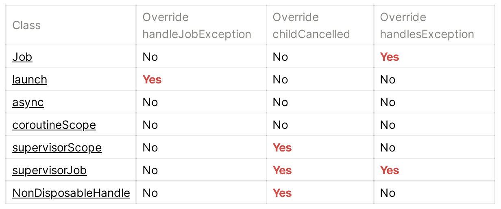
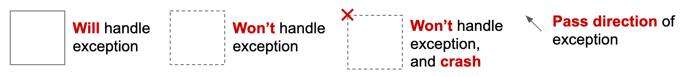
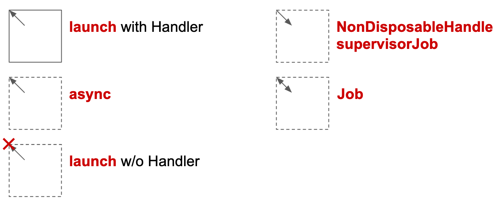
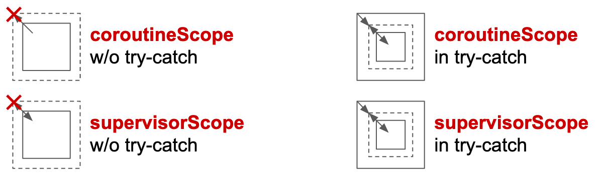
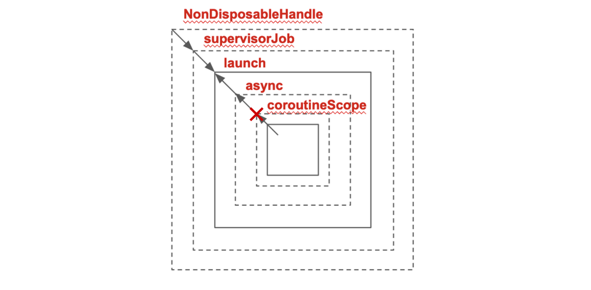

In Part 1, we’ve talked about the concept to know how a constructed Coroutine propagates and handles the exception and cancel the others.
In Part 2, we are going to talk about how to use the knowledge and write an exception free constructed Coroutine.
Before digging into cases, we need to know how to read a constructed Coroutine. In the beginning, we’ve said that CoroutineContext is like a Collection. So when you have a constructed Coroutine like below:
val handler = CoroutineExceptionHandler { ... }
launch(SupervisorJob() + handler) { async { throw Exception } }The connection between each one is:
NonDisposableHandle -> SupervisorJob() -> launch -> async -> coroutineScopeThen when there is an exception, the following things will happen:
asyncwill usecancelParentto ask whether there is a parent can handle the exception.launchwill return true onhandleExceptionby default. Soasyncwon’t need to call tohandleJobException.SupervisorJobwill return false oncancelChilddirectly, hencelaunchwill need to use Handler to handle the exception.- All the default parent for the top parent is
NonDisposableHandle, which will return false oncancelChildby default.
By summarizing the information, we can for sure if we don’t assign a Handler to launch, any exception inside will crash the app.
Case study
Now we can use samples in Kotlin Coroutine Job Hierarchy — Succeed, Fail, and Cancel to justify whether the table will misguide us.
I only pick some of them as an example to demonstrate how to analyze different kinds of constructed Coroutine based on what we’ve learned:
launch { throw }**：The parent oflaunchisNonDIsposableHandle, which will force it to handler exception. **Without a Handler, the result will fail.launch { launch { throw } }**：The same reason, the top parent will be forced to handle exception. **Without a Handler, the result will fail.launch { launch(Handler) { throw } }**：Only the top parent will need to handler the exception. **Since the Handler only exists inside the child launch, hence the result will fail.async { throw }**：asyncdoesn’t overridehandleJobException, so **it won’t handle the exception, the result will pass.launch { async { throw } }**：Exception will pass to parentlaunch. **Without a Handler, the result will fail.launch(Job) { throw }**：Jobwill returnfalseonhandleException, which will force the child to handle. **Without a Handler, the result will fail.coroutineScope { throw }**：Scope will throw exception once. **Withouttry-catch, the result will fail.coroutineScope { launch(Handler) { throw } }**：claim to handle exception, make Handler won’t be used. **Withouttry-catch, the result will fail.
Supervisor
With supervisor, almost behave in the same way.
launch(SupervisorJob) { throw }**：SupervisorJobwill returnfalseonhandleException, which will force the child to handle. **Without a Handler, the result will fail.supervisorScope { launch(Handler) { throw } }**：overridechildCancelledto returnfalse, which will force child to handle. **Without a Handler, the result will fail.
Diagram
Maybe the cases above still pretty confusing, then let’s try another way: through the graph.
Definition
Let’s see the table from Part 1 again:

And then we use rectangular to represent the boundary of exception:

Solid line
Means the exception will be handled:
- Coroutines that override
handleJobExceptionwith Handler - Scopes that return
trueonisScopeCoroutine. try-catchblock.
Dot line
- Coroutines that don’t override
handleJobException. - Coroutines that override
handleJobExceptionwithout Handler.
Dot line with error
- Coroutines or Scopes that claim to handle exception but failed to handle. In some operators that can cause crash.
Arrow
Means to propagate exception out or push back.
- out: Coroutines that don’t override
childCancelled. - push back: Coroutines that override
childCancelledorhandleException.
And here’s the combination of the above to represent the basic functions:

Scopes
Since Scopes will return true on isScopeCoroutine, which makes Scopes claims to handle exception by default, and rethrow exception in other way. The graph of Scopes are quite different:

The dot line means to rethrow exception. But it’s not like propagating exception between Coroutine, so we can use try-catch to handle exception.
Now, let’s use the example above:
NonDisposableHandle -> SupervisorJob() -> launch -> async -> coroutineScopeThe graph that you’ll get is:

The arrow will meet at the launch, which means the launch will handle the exception. If not, the whole constructed Coroutine will just crash.
Summary
Exception is important because it will crash the app and cause bad use experiences. Hope this article can help you to write a exception free constructed Coroutine easily.